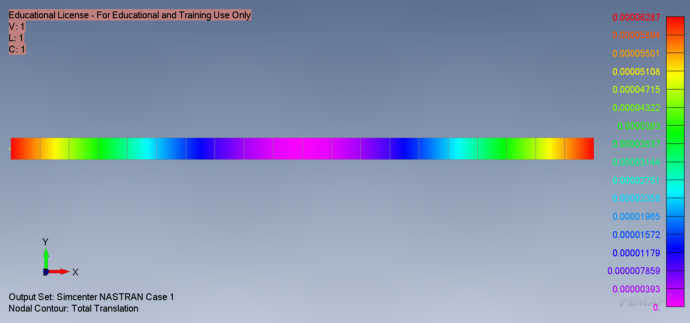
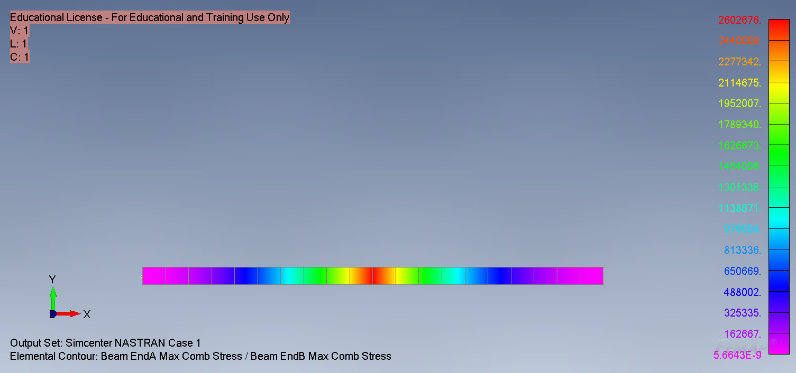

Detailed Beechcraft Model 18 Stability Analysis

Background:
For my aircraft stability and controls class, we had a semester long project involving us performing a full stability (longitudinal, directional, and lateral) analysis of the Beechcraft Model 18.
This project not only consisted of performing various hand calculations to derive various stability coefficients, but also researching and finding all of the required information needed for stability analysis.
In this project, I led a group of four people (myself included).
We worked as a team completing our own calculations independently, aiding one another as needed.
At the end we compiled our results and wrote a report that detailed the methodology employed, as well as the results.
The goal was for everyone to have relatively similar results, within a small margin of error.
We were to write and compare and justify our results, if they seemed fit.
Objectives:
- Research and obtain all of the necessary information to analyze the Beechcraft Model 18’s stability
- Perform all of the necessary stability calculations to obtain the results
- Obtain the center of gravity location that would give the aircraft approximately 10% longitudinal stability
- Obtain all of the stability coefficients (longitudinal, directional, and lateral)
- Create an Excel Spreadsheet to iterate the center of gravity location to get 10% longitudinal stability and validate all hand calculations
- Report all methods and findings in a final report
Preliminary Calculations:
Before any design work could begin, I had to obtain the sizing of the wing.
Specifically, the half angle, chord size and span length, so that it stayed within all of the given constraints.
Additionally, I had to determine a test envelope that kept aerodynamic coefficients within the constraints.
This was done using an iterative process of hand calculations and an Excel Spreadsheet using Thin Airfoil Theory.
The test envelope was set to test the wing at 20 m/s, varying the angle of attack from -2 deg to 14 deg in increments of 4 degrees, and adding in a 0-degree angle of attack test.
The half angle size was set to 15 degrees, with a chord length of 0.15m and a wingspan of 0.4m.
Design/Simulate/Procurement:
These three stages were done back and forth.
The wing design was all done with CATIA v5 using Generative Surface Design (GSD).
To ensure that the wing would not fall apart, I iteratively changed the sizing of the main spar.
I simulated this in NX FEMAP, assuming a constant loading over the main spar.
While this would not be aerodynamically accurate, as the lift distribution would be less at the tips, it would be fine for the purposes as it would provide more drastic results, and if they were adequate, then it would be ok.
The spar selection was done depending on what could be found online available to order. Thus, all of these go hand in hand and were done together.
If one spar would not suffice, then I had to find another one available online or in a store, then simulate to see if it would hold or not.
Then update the design and shift placement of spar(s) as needed.
This wing was made far stronger than needed, but this was done purposefully to ensure that it held up in the wind tunnel.
The final design is shown below.
 Maximum deflection of the main spar.
 Maximum stresses on the main spar.
Manufacturing:
After having designed and acquired all of the required materials, it needed to be built and assembled.
This process was straightforward. First, we placed all of the ribs onto the main spar, epoxying them into place and making epoxy fillets.
Then we inserted the forward and aft spars and followed the same procedure using epoxy to join and then create fillets.
After this, we cut the skin panels and put them onto the wing. This was also done with epoxy to maximize the strength.
However, after having done this, I believe it would have been a better decision to fuse the panels onto the ribs with a soldering iron, as they were 3D printed with PLA and the epoxy was not as effective as I had thought.
After epoxying it all, we applied a layer of duct tape around the entire wing in an effort to decrease surface roughness and better hold everything together.
The final product can be seen below.


Results:
The results were as expected.
The lift and drag were rather sporadic.
The lift following a transformed quadratic trend, while the drag followed a cubic trend.
The drag polar looked as it should, following a quadratic trend.
Lastly, the lift to drag ratio plotted against the angle of attack follows a transformed quadratic trend, similar to that of the lift vs angle of attack.
While these results are not great, this was to be expected.
This airfoil is not meant to effectively generate or produce lift while at low speeds.
Typically, aircraft will just power through these conditions to get the airfoils to better operating conditions.
Conclusions:
Throughout this entire experiment, a lot was learned.
Specifically, about the design process and iteration.
I spent countless hours going back and forth, researching different materials and shapes for different spars, and then simulating them and then adding everything into the CAD design.
Additionally, I learned a lot while doing the manufacturing.
pecifically, tolerancing when 3D printing and the need for this, as well as the importance to test material adhesion before assembly.
There are a few things that I think could have been done better.
As mentioned before, I think that the skin panels should have been attached using fusion with a soldering iron.
I also think that a better material could have been chosen for the skin, such as monokote.
This wasn’t used as it would have had a higher cost, as we would have needed an iron and the material, as well as it wasn’t available in the time we needed it.
Additionally, this could have all raised adhesion problems with the 3D printed ribs.